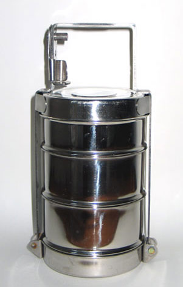

Weeknotes have become Fortnightnotes around here, but we’re getting back into regular office hours and a few new projects are coming down the pipes. This will get us back on a weekly track.
Week #136
This week was mostly spent in Geneva Switzerland working at CERN on a Line-mode browser simulator. We wrote a longer description of the CERN experience if anyone is interested in the nitty-gritty of the event and how things work.
On that friday afternoon, we were treated to a guided visit to the LHCb. This is the detector used to measure the beauty quark and anti-beauty quark. A quick bus ride into the french country-side, an introduction to particle physics by Richard Jacobsson, then a 100+ meter decent which brought us to the LHCb detector. Our tour took us past the old DELPHI experiment which was on the same site. A massive portion still underground as a memento to the work, effort, discovers and shear size of the detector.
A few pressurised doors later we stood looking at the LHCb. The beam was a hundred of meters away, but we could see the tunnel from which it emerges only to spit out protons to collide with on-coming protons to shatter them with the hope the detector recording some of the pieces.
Week #137
137 is an interesting number, it is the 33rd prime in the sequence. After a few days at CERN surrounded by nuclear physicists, it turns out that 137 is the theoretical maximum atomic weight of an atom. Any more than that and the electron shell will breakdown. 137 is also the name of an astroid in the Asteroid belt, 137 Meliboea is a large 144 +/- 16km, C-class asteroid. We’ve been doing some research around Asteroid mining for a potential future project. It is still notes on paper right now, but we’re hoping to find more free time to explore the findings.
This week has been the week of tying-up lots of loose-ends. It seems as if everyone wants to launch a project before October 1st and this is the week it all comes together.
The City of Reykjavik is one the folks we work with on a regular basis for various projects. This week they are internally launching their new website and we’ve been working with them on an interim calendar solution.
 We also launched a small site for Access Iceland. It is an editable map of buildings that have been assessed for their accessibility. We then can map that with information regarding what services are available.
We also launched a small site for Access Iceland. It is an editable map of buildings that have been assessed for their accessibility. We then can map that with information regarding what services are available.
Another map we’re working on is for the Green Marine Technology group. This one revolves around showing off all of the companies in the organization and what tools they offer in marine technology. This uses slippy-map style interface for a hand-drawn map of a fictitious land.
For Vísar we’ve been migrating data between their various systems and updating the code for new survey questions and economic data that we are tracking in 2013-14 school year.
The Reykjavik International Film Fest has also started this week and the team went to see The Lunchbox. This was prompted by one of our local lunch haunts which serves a great thali. The story of the Dabbawala service is fascinating. They are delivering millions of lunches all over India with just a tiny fraction of mistakes, all by mostly illiterate delivery teams. I’m sure we’ll watch a few more films in week 138 too.